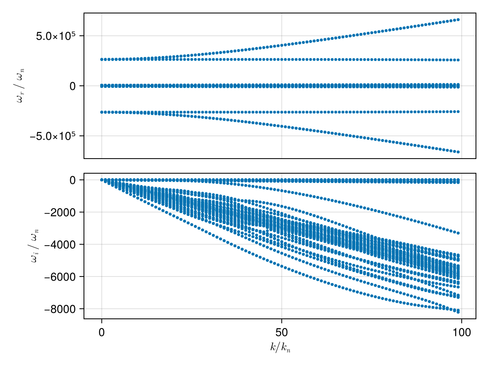
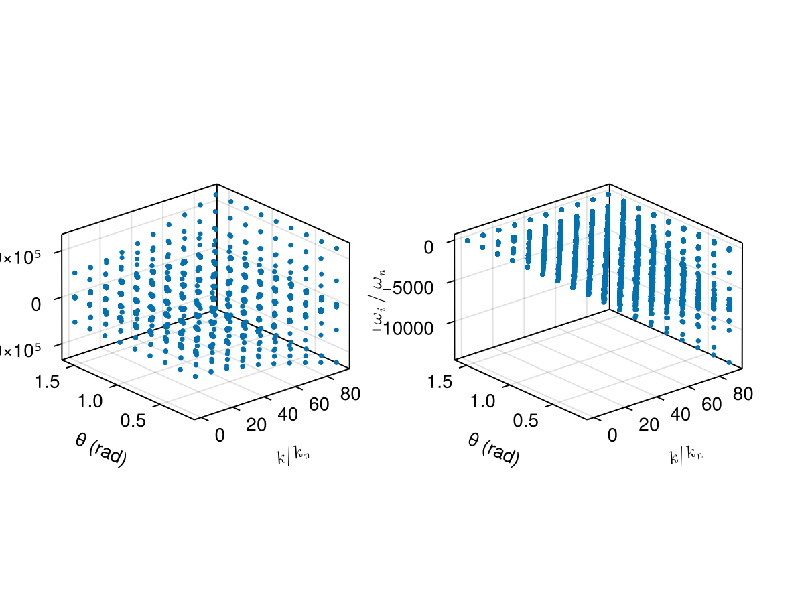

Case: Dispersion surface tracking (2D scan)
This page demonstrates how to construct a dispersion surface by scanning a 2D parameter space (wave number k and propagation angle θ) and using branch tracking to follow a consistent mode across the scan.
We consider a typical electron–proton plasma and scan:
kin normalized unitsk/k_n, wherek_n = ω_pi/cθfrom 5° to 90°
using PlasmaBO
using PlasmaBO: c0
B0 = 5e-9 # [Tesla]
n = 5.0e6
T = 12.94
ion = Maxwellian(:p, n, T)
electron = Maxwellian(:e, n, T)
species = (ion, electron)
wn = abs(B0 * ion.q / ion.m)
wpi = plasma_frequency(ion.q, n, ion.m)
kn = wpi / c0
wci = wn
# Kinetic solver settings (adjust upward for accuracy)
N = 33Dispersion Curve Scan
julia> using CairoMakiejulia> θ = deg2rad(45);julia> k_ranges = (0.01:1:100) .* kn;julia> results = solve(species, B0, k_ranges, θ; N)Solving dispersion (k, θ)... 13%|███ | ETA: 0:00:07 Solving dispersion (k, θ)... 53%|████████████▎ | ETA: 0:00:02 Solving dispersion (k, θ)... 89%|████████████████████▌ | ETA: 0:00:00 Solving dispersion (k, θ)... 100%|███████████████████████| Time: 0:00:03 PlasmaBO.DispersionSolution{StepRangeLen{Float64, Base.TwicePrecision{Float64}, Base.TwicePrecision{Float64}, Int64}, Float64, Matrix{Vector{ComplexF64}}}(9.81977277497953e-8:9.819772774979531e-6:0.0009722557024507233, 0.7853981633974483, Vector{ComplexF64}[[-126621.46687532216 - 6.619349462606051e-12im, -126181.23357016398 + 1.3601995610995003e-9im, -125742.53584747149 + 2.1561238808942125e-11im, -2638.5615125116565 - 0.24087074984805917im, -2638.561512511639 - 0.2408707498509557im, -2638.561512511603 - 0.24087074985152193im, -2638.4470794029935 - 0.2651185849406398im, -2638.4470794029817 - 0.26511858494221624im, -2638.4470794029767 - 0.26511858494211005im, -2638.354345226286 - 0.28028464658586627im … 2638.354345226317 - 0.28028464658554125im, 2638.447079402973 - 0.2651185849424696im, 2638.4470794029744 - 0.2651185849439361im, 2638.447079402997 - 0.2651185849430548im, 2638.5615125116046 - 0.24087074985044968im, 2638.5615125116155 - 0.24087074985099613im, 2638.561512511659 - 0.2408707498517537im, 125742.53584747187 + 8.425229955008189e-12im, 126181.23357016388 - 1.4633065204735855e-9im, 126621.46687532167 - 2.2632085140298968e-11im]; [-126647.93289248453 - 1.585207520804488e-10im, -126198.78018484607 + 2.350269487779047e-9im, -125768.49400451631 + 8.319761546360382e-11im, -2671.7111478483184 - 24.327945734953172im, -2671.7111478483025 - 24.327945734953403im, -2671.7111475953157 - 24.327946383220365im, -2660.1534038758136 - 26.77697707914948im, -2660.1534038758086 - 26.77697707914968im, -2660.153393709816 - 26.776965185603643im, -2650.7873334603105 - 28.30873735069551im … 2650.787333460299 - 28.30873735069587im, 2660.1533937098193 - 26.77696518560341im, 2660.153403875812 - 26.776977079149646im, 2660.153403875823 - 26.776977079149788im, 2671.7111475953334 - 24.327946383221047im, 2671.711147848292 - 24.327945734953005im, 2671.7111478483057 - 24.32794573495329im, 125768.49400451648 + 1.5416311246987224e-10im, 126198.78018484783 + 2.94569213815845e-10im, 126647.93289248474 - 8.092843960618788e-11im]; … ; [-313940.64254257845 - 4.564565776980566e-8im, -313861.54641744494 - 4.97382498056984e-8im, -123618.23036716954 - 2.4524110110740917e-5im, -5887.225775507066 - 2360.774219289825im, -5887.0566963866795 - 2360.9532339551133im, -5774.271214584519 - 2344.2165983444806im, -5223.734491155803 - 2588.810620991723im, -5109.542451363689 - 2214.2248374752207im, -5007.8157701210175 - 2360.7742192898395im, -5006.872705233714 - 2361.69577513094im … 5006.872705233746 - 2361.695775130945im, 5007.815770121004 - 2360.77421928985im, 5109.542451363697 - 2214.2248374752216im, 5223.734491155752 - 2588.8106209917255im, 5774.271214584567 - 2344.2165983445066im, 5887.0566963866795 - 2360.953233955123im, 5887.225775507092 - 2360.774219289826im, 123618.23036717004 - 2.4525106049805093e-5im, 313861.54641744454 - 4.9878053687280044e-8im, 313940.64254257863 - 4.58168614159149e-8im]; [-316611.46917836694 - 3.7978589190897864e-8im, -316532.82752609794 - 5.782032298978682e-8im, -123505.55495900534 - 2.5916048725948248e-5im, -5920.375410843721 - 2384.861294274932im, -5920.198173900938 - 2385.0485721136406im, -5802.211344748015 - 2366.079352138625im, -5259.865772167388 - 2621.3752889476027im, -5147.171836823985 - 2234.949525972867im, -5040.965405457712 - 2384.861294274959im, -5039.996688056804 - 2385.8060513072655im … 5039.996688056845 - 2385.80605130728im, 5040.965405457706 - 2384.8612942749455im, 5147.171836824033 - 2234.949525972831im, 5259.865772167394 - 2621.375288947532im, 5802.211344748009 - 2366.079352138631im, 5920.198173900945 - 2385.0485721136233im, 5920.375410843779 - 2384.861294274938im, 123505.55495900495 - 2.591408061815461e-5im, 316532.8275260978 - 5.7380930229555815e-8im, 316611.4691783667 - 3.768624168287715e-8im];;])
plot(results, kn, wn)
using PlasmaBO: plot_branches
# k, ω pairs for initial branch points (see `BranchPoint` for more control over tracking)
initial_point = (50 * kn, -600 * wn *im)
branch = track(results, initial_point)
f, (ax1, ax2) = plot_branches((branch,), kn, wn)
ylims!(ax2, -3500,500)
f
Dispersion Surface Scan (2D)
julia> ks = (0.1:10:100.0) .* kn;julia> θs = deg2rad.(10.0:10.0:90.0);julia> res2d = solve(species, B0, ks, θs; N)Solving dispersion (k, θ)... 34%|███████▉ | ETA: 0:00:02 Solving dispersion (k, θ)... 67%|███████████████▍ | ETA: 0:00:01 Solving dispersion (k, θ)... 100%|███████████████████████| Time: 0:00:03 PlasmaBO.DispersionSolution{StepRangeLen{Float64, Base.TwicePrecision{Float64}, Base.TwicePrecision{Float64}, Int64}, Vector{Float64}, Matrix{Vector{ComplexF64}}}(9.81977277497953e-7:9.81977277497953e-5:0.0008847615270256557, [0.17453292519943295, 0.3490658503988659, 0.5235987755982988, 0.6981317007977318, 0.8726646259971648, 1.0471975511965976, 1.2217304763960306, 1.3962634015954636, 1.5707963267948966], Vector{ComplexF64}[[-126621.80021764745 + 7.911901721887465e-11im, -126181.24223376134 - 1.0169303303494246e-9im, -125742.87385793944 + 1.4929256619227555e-10im, -2642.8468602838666 - 3.354675534705912im, -2642.8468602838616 - 3.3546755347065513im, -2642.846860283857 - 3.354675534707377im, -2641.253117788596 - 3.6923820399577427im, -2641.253117788588 - 3.6923820399581007im, -2641.2531177885753 - 3.6923820399541682im, -2639.961582498387 - 3.9036040998673514im … 2639.961582498386 - 3.903604099867106im, 2641.2531177885667 - 3.6923820399548504im, 2641.25311778857 - 3.6923820399577405im, 2641.2531177885785 - 3.6923820399578706im, 2642.8468602838625 - 3.3546755347060317im, 2642.8468602838702 - 3.354675534705933im, 2642.8468602838707 - 3.3546755347060815im, 125742.87385793967 - 8.148110229349039e-11im, 126181.24223376132 + 1.0151988921391753e-9im, 126621.80021764718 - 1.504292338133915e-10im] [-126621.78542391624 + 9.524220322999766e-11im, -126181.2720491104 - 4.0152580427933914e-10im, -125742.85883577906 + 1.5931724777591087e-11im, -2642.635357548895 - 3.2009941386553487im, -2642.6353575488924 - 3.200994138655478im, -2642.635357548884 - 3.2009941386581593im, -2641.1146261597764 - 3.5232299354454im, -2641.1146261597737 - 3.52322993544477im, -2641.114626159717 - 3.5232299353839576im, -2639.882257529875 - 3.7247756791432343im … 2639.882257529872 - 3.7247756791435993im, 2641.11462615972 - 3.5232299353834935im, 2641.1146261597505 - 3.5232299354450416im, 2641.1146261597814 - 3.5232299354448515im, 2642.6353575488793 - 3.2009941386554153im, 2642.6353575488843 - 3.2009941386554432im, 2642.6353575488847 - 3.200994138658284im, 125742.85883577957 - 9.898291646602297e-11im, 126181.27204911043 + 4.020515259108511e-10im, 126621.78542391543 - 1.797394003149683e-11im] … [-126621.64002586048 + 1.3308719013990777e-10im, -126181.56492171806 + 2.7737523869816212e-9im, -125742.71135517812 + 1.7657171247863462e-10im, -2639.0440903433014 - 0.5915198082912494im, -2639.0440903432977 - 0.591519808291131im, -2639.044090343238 - 0.5915198085227im, -2638.7630705410934 - 0.6510665767283045im, -2638.763070541089 - 0.6510665767270597im, -2638.763070537405 - 0.6510665725318057im, -2638.535338052072 - 0.6883107200578543im … 2638.535338052086 - 0.6883107200584015im, 2638.7630705373904 - 0.6510665725315334im, 2638.7630705410743 - 0.65106657672758im, 2638.7630705410897 - 0.6510665767285247im, 2639.044090343237 - 0.5915198085233133im, 2639.044090343303 - 0.5915198082907389im, 2639.0440903433073 - 0.5915198082918975im, 125742.71135517753 - 1.3264586606980226e-10im, 126181.56492171795 - 2.771428487418872e-9im, 126621.64002586117 - 1.7343929670873267e-10im] [-126621.63488255237 + 2.207931675892101e-10im, -126181.57527634701 + 2.7674356718928168e-9im, -125742.70614359842 + 1.0117614856526957e-11im, -2638.230016158274 + 2.6290081223123707e-13im, -2638.2300161582734 - 7.958078640513122e-13im, -2638.230016158269 + 2.2744821434259044e-13im, -2638.2300161582657 - 1.4779288903810084e-12im, -2638.2300161582643 - 8.32574192530122e-14im, -2638.2300161582634 - 7.105427357601002e-14im, -2638.230016158263 + 2.7609026176378393e-12im … 2638.230016158257 - 4.5486993541618836e-14im, 2638.230016158257 + 2.291361664857862e-13im, 2638.230016158257 + 2.592650607477305e-13im, 2638.230016158257 + 6.821203528173579e-13im, 2638.2300161582593 - 1.2139388640360724e-13im, 2638.230016158266 + 1.0831335828243027e-12im, 2638.230016158272 - 1.0521028492860296e-12im, 125742.70614359836 - 2.235963160938137e-10im, 126181.57527634679 - 2.7551574934188822e-9im, 126621.63488255235 - 7.568484305698762e-12im]; [-130046.23180107027 - 3.383515578688237e-10im, -129226.35672741312 + 2.1557233585634552e-10im, -126179.48881185577 - 5.828633871988223e-9im, -3104.5312728462527 - 338.8222290053453im, -3104.5312728462286 - 338.8222290053403im, -3104.531257968988 - 338.822255573205im, -2943.563280822045 - 372.9305860357711im, -2943.563280822012 - 372.9305860357633im, -2943.562949292049 - 372.93003633563467im, -2813.1214069620005 - 394.2641424791296im … 2813.1214069619914 - 394.26414247912777im, 2943.562949292051 - 372.9300363356362im, 2943.563280822028 - 372.9305860357642im, 2943.56328082205 - 372.9305860357755im, 3104.53125796899 - 338.8222555732042im, 3104.531272846235 - 338.82222900534424im, 3104.5312728462363 - 338.82222900534407im, 126179.48881185555 + 3.3864111514958495e-10im, 129226.35672741306 + 4.314980532192184e-11im, 130046.23180106976 + 3.4884710644120373e-10im] [-130020.12452197907 - 4.3339795522135096e-10im, -129238.36480583691 + 3.7856187969602103e-11im, -126168.23913100717 - 3.2114230397024503e-9im, -3083.1694966128443 - 323.3004080042093im, -3083.169496612811 - 323.3004080042651im, -3083.1692757925734 - 323.30080396482396im, -2929.575626311526 - 355.84622347995975im, -2929.575626310732 - 355.84622347884886im, -2929.5706565881974 - 355.83805036378504im, -2805.1539693956342 - 376.20400084295306im … 2805.1539693956165 - 376.2040008429489im, 2929.570656588185 - 355.83805036378635im, 2929.5756263107255 - 355.8462234788456im, 2929.5756263115236 - 355.84622347995924im, 3083.1692757925857 - 323.30080396482447im, 3083.1694966128275 - 323.3004080042651im, 3083.1694966128534 - 323.30040800420966im, 126168.23913100641 - 4.662794594878505e-10im, 129238.36480583674 - 3.5943352960235135e-10im, 130020.12452197891 + 2.1577018378795775e-10im] … [-129717.76698906317 - 4.589745253434646e-10im, -129565.6296648206 + 1.1172660166063154e-9im, -126098.71047222408 + 7.680250471605476e-11im, -2720.451508850589 - 59.7435006374234im, -2720.451508746338 - 59.74350089012231im, -2720.441047385936 - 59.766587047981204im, -2692.0685088262703 - 65.75772424952643im, -2692.0685049451317 - 65.75771955865349im, -2691.7332892098602 - 65.2844218434409im, -2671.5739748355054 - 69.52398918934753im … 2671.573974835504 - 69.52398918934784im, 2691.7332892098593 - 65.28442184344163im, 2692.06850494514 - 65.75771955865373im, 2692.068508826247 - 65.75772424952446im, 2720.441047385946 - 59.76658704798058im, 2720.451508746355 - 59.74350089012384im, 2720.4515088505837 - 59.74350063742332im, 126098.71047222443 - 2.844398761664424e-12im, 129565.62966481976 - 8.170746217853026e-10im, 129717.76698906267 + 5.593292640552788e-10im] [-129668.7665053779 - 5.2060760183179895e-11im, -129616.10202991415 - 4.341110059998909e-9im, -126096.80894501753 + 3.947601875894826e-11im, -2638.230016158271 + 0.0im, -2638.230016158268 + 3.816946758661288e-13im, -2638.2300161582666 - 3.056582764671134e-15im, -2638.2300161582652 - 1.1031175972675555e-12im, -2638.230016158263 - 8.046896482483135e-13im, -2638.2300161582616 + 1.0435649973912541e-13im, -2638.2300161582602 - 1.1243471269186713e-13im … 2638.230016158257 - 3.126388037344441e-13im, 2638.2300161582575 - 1.7763568394002505e-13im, 2638.230016158258 + 4.2099657093785936e-13im, 2638.2300161582602 + 4.8627768478581856e-14im, 2638.2300161582616 + 1.4992451724538114e-12im, 2638.2300161582652 + 1.456122502906735e-14im, 2638.2300161582693 + 2.4158453015843406e-13im, 126096.80894501747 - 1.0226533851469733e-10im, 129616.10202991914 + 5.607126684866825e-9im, 129668.76650537775 + 1.1320163459996319e-10im]; … ; [-267526.68970113725 - 1.373862912918003e-8im, -267333.94635846524 - 1.4760008879968505e-8im, -126172.77219117152 - 8.131240573382654e-5im, -6336.322160782907 - 2687.0951032998278im, -6336.3221590747735 - 2687.0951046509194im, -6336.238399861355 - 2687.144919316488im, -5456.91215539677 - 2687.0951032998137im, -5456.911892188267 - 2687.095272859922im, -5452.350753781651 - 2688.5246277113733im, -5059.887961382793 - 2955.9866247648656im … 5059.88796138281 - 2955.9866247648533im, 5452.350753781643 - 2688.524627711374im, 5456.911892188251 - 2687.0952728599086im, 5456.912155396774 - 2687.095103299814im, 6336.23839986134 - 2687.1449193164867im, 6336.32215907473 - 2687.095104650893im, 6336.322160782912 - 2687.095103299822im, 126172.77219117167 - 8.13140043435107e-5im, 267333.94635846565 - 1.4819306670688093e-8im, 267526.6897011378 - 1.391163095831871e-8im] [-267503.4261524525 - 4.3195748321052537e-8im, -267319.9842888089 - 4.446867055552566e-8im, -126162.67963775889 - 5.874499965302237e-5im, -6166.90847006054 - 2563.996305063087im, -6166.908058156656 - 2563.996648242681im, -6164.91334460269 - 2564.4497676077085im, -5287.498464674455 - 2563.9963050630713im, -5287.483269961914 - 2564.0081406182917im, -5251.7237296215335 - 2561.224472491435im, -4965.899650699161 - 2797.0124659387607im … 4965.899650699188 - 2797.012465938778im, 5251.72372962154 - 2561.224472491419im, 5287.483269961897 - 2564.008140618276im, 5287.498464674422 - 2563.9963050630813im, 6164.913344602686 - 2564.449767607711im, 6166.908058156653 - 2563.9966482426885im, 6166.908470060496 - 2563.996305063071im, 126162.67963775936 - 5.87456029414687e-5im, 267319.9842888087 - 4.438265932549257e-8im, 267503.4261524528 - 4.330286174081266e-8im] … [-266971.7163171812 + 1.0728287760769253e-10im, -265749.9611086689 + 1.4937315656934982e-10im, -118413.0055805664 - 6.754809409911806e-10im, -3290.3034384015864 - 473.8073664413541im, -3290.131436873155 - 474.1119982352633im, -3257.822805965353 - 512.8095690843961im, -3222.756145491941 - 423.9507109118031im, -3065.206576822448 - 521.5043279591026im, -3061.7978352008026 - 514.4723377181101im, -2972.366400525928 - 742.6364618165968im … 2972.3664005259275 - 742.636461816581im, 3061.797835200814 - 514.4723377181126im, 3065.2065768224456 - 521.5043279591064im, 3222.756145491884 - 423.9507109118372im, 3257.822805965357 - 512.8095690843711im, 3290.1314368731582 - 474.11199823526823im, 3290.303438401583 - 473.80736644135595im, 118413.00558056646 - 7.005479558126832e-10im, 265749.9611086686 + 9.784697113304385e-11im, 266971.7163171821 - 3.1115821030880397e-10im] [-267036.4338290153 - 1.6723128336605242e-10im, -265686.80543264607 + 4.980549306310422e-11im, -117722.58317984045 - 4.165529339523444e-11im, -2638.230016159407 - 1.2809736257719554e-9im, -2638.2300161583657 + 2.887645678129047e-11im, -2638.2300161582752 - 1.9095836023552692e-14im, -2638.230016158273 + 8.881784197001252e-14im, -2638.230016158262 - 3.1796787425264483e-13im, -2638.230016158261 - 2.7284841053187847e-12im, -2638.230016158258 - 2.0605739337042905e-13im … 2638.230016158257 - 2.357022850583858e-13im, 2638.230016158257 - 7.37188088351104e-14im, 2638.2300161582575 - 2.8229936663296275e-13im, 2638.230016158258 + 2.0485297541667656e-13im, 2638.2300161582607 - 1.1928236176572682e-12im, 2638.230016158263 + 1.3145040611561853e-13im, 2638.2300161582675 - 1.8776518118102103e-9im, 117722.5831798405 + 4.346351691258749e-11im, 265686.80543264543 - 4.664012385457839e-11im, 267036.4338290151 + 3.828960937885888e-11im]; [-293795.77994125243 - 1.4304492944259914e-8im, -293635.9999890178 - 1.4993191511918677e-8im, -126176.20945010288 - 0.00014532943756337218im, -6798.006573345268 - 3022.562656770439im, -6798.006569082729 - 3022.5626598751514im, -6797.868548884278 - 3022.6266227249234im, -5918.596567959188 - 3022.5626567704426im, -5918.596049435916 - 3022.562980651728im, -5912.412511842692 - 3023.7110549458im, -5362.546384741858 - 3324.622009475555im … 5362.5463847418905 - 3324.6220094755777im, 5912.412511842682 - 3023.7110549458043im, 5918.596049435906 - 3022.5629806517322im, 5918.596567959145 - 3022.562656770424im, 6797.868548884284 - 3022.626622724934im, 6798.006569082698 - 3022.56265987514im, 6798.006573345226 - 3022.5626567704167im, 126176.2094501031 - 0.00014532921901322813im, 293635.9999890182 - 1.4959368854761124e-8im, 293795.77994125255 - 1.4365468814503402e-8im] [-293760.472487162 - 4.411413526380843e-8im, -293608.73013647465 - 4.584097508720104e-8im, -126161.30746211251 - 0.00010509160562810001im, -6607.442609124448 - 2884.0957189286287im, -6607.441666758615 - 2884.0965047533887im, -6603.932590101793 - 2884.454698933339im, -5728.032603738391 - 2884.0957189286237im, -5728.005596155147 - 2884.1171287391im, -5675.996686715485 - 2874.633734081994im, -5269.211112220588 - 3146.1229528952895im … 5269.211112220565 - 3146.122952895274im, 5675.996686715464 - 2874.633734081988im, 5728.005596155188 - 2884.117128739106im, 5728.032603738399 - 2884.0957189286373im, 6603.932590101832 - 2884.4546989333458im, 6607.44166675866 - 2884.0965047534146im, 6607.442609124498 - 2884.095718928642im, 126161.30746211261 - 0.00010509041467293106im, 293608.7301364745 - 4.568164513329975e-8im, 293760.47248716163 - 4.404137143865228e-8im] … [-292980.77859298745 - 2.19152317409634e-10im, -291734.3181264648 + 1.6559393526403602e-10im, -114316.92957399445 - 1.353262690344898e-9im, -3371.7108569088605 - 532.9593472704868im, -3371.451855609959 - 533.4071868750907im, -3335.4645308844565 - 586.1181888842495im, -3304.836685813201 - 469.5498780833494im, -3118.5120151076408 - 586.6109856319044im, -3113.8841631327177 - 575.9049885785588im, -3014.455552918301 - 846.6845431084924im … 3014.455552918298 - 846.684543108491im, 3113.884163132721 - 575.9049885785565im, 3118.5120151076176 - 586.6109856319016im, 3304.8366858131963 - 469.5498780833576im, 3335.4645308844656 - 586.1181888842461im, 3371.451855609962 - 533.407186875093im, 3371.7108569088773 - 532.9593472704865im, 114316.9295739944 - 1.1620374654534656e-9im, 291734.3181264634 + 2.2381383030478687e-10im, 292980.77859298757 - 1.6584777995376498e-10im] [-293060.7825108112 + 1.5826311239149015e-10im, -291674.0854377929 - 1.2240765476021301e-11im, -113340.75968884482 - 3.392582607864482e-11im, -2638.230016158713 - 2.483295825916887e-10im, -2638.230016158262 - 1.2954082251326327e-12im, -2638.230016158261 + 1.3489209749195652e-13im, -2638.2300161582607 - 5.222489107836736e-13im, -2638.2300161582593 + 7.013056801952189e-12im, -2638.2300161582584 + 4.831690603168681e-13im, -2638.2300161582575 + 1.8118839761882555e-13im … 2638.2300161582543 - 5.816902515221045e-12im, 2638.2300161582575 + 1.973888216767488e-13im, 2638.230016158259 + 1.8352859790746017e-13im, 2638.2300161582593 - 3.4638958368304884e-14im, 2638.23001615826 + 9.947598300641403e-13im, 2638.2300161582602 - 4.189578294625737e-13im, 2638.2300161582666 - 1.9048651545006123e-13im, 113340.75968884473 + 7.168533137014686e-12im, 291674.0854377941 + 8.549715568764021e-12im, 293060.7825108111 - 3.4955379031847283e-11im]])
plot(res2d, kn, wn)
# Choose a reference angle and reference k for seeding the tracked mode
seed = (90.5 * kn, deg2rad(20), (1000 - 3000im) * wn)
branch = track(res2d, seed)
plot_branches((branch,), kn, wn)